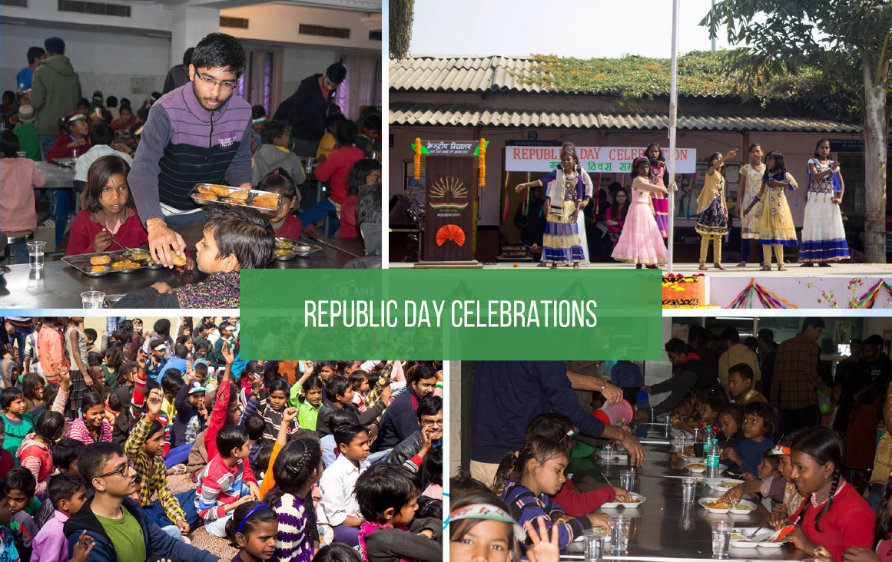

prayaasiiita Celebrated for the homecoming of shree ram; the victory of good over the evil; the festival of lights and of togetherness. Sometimes a sparkle is enough to ignite the fire, a step in the right direction enough to light up the diyas, and a little gratitude enough to make the soan papdis get displaced. Team praayas wishes you a very happy diwali. May God give you the strength to fight the darkness.
With the motto seva paramodharma, the army marched down the Indian gate for the 74th time; signifying the birth of a republic and sovereign nation. All the sacrifices, all the hardships, endured by the men and women, summarised. By carrying forward the motto," Jai Javan, Jai Kisaan, Jai Vigyan!", we took the prayaas students on a visit to the CSIR lab, organized the lunch, and showed the republic day celebrations.
